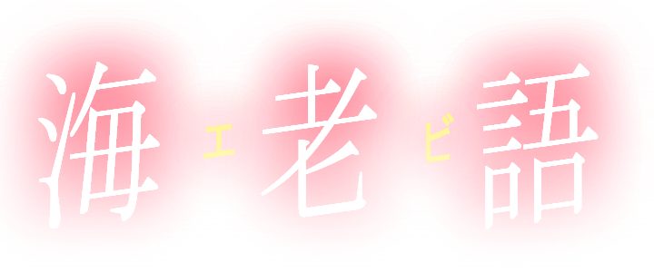

About me
ゴミみたいな人生送ってます
小学生の時親からパソコンをもらいました。きっかけは親がマインクラフトをくれたことです。
それからパソコンを毎日するようになり挙句の果てにオタクになっていました。
周りの人はよくあるオタクへの道筋と言っています。
自分の周りには自分ほどパソコン好きな人はもちろんいないので、
結構しょんぼりしていますね。
プログラミング言語は主にC#と、pythonを使っていて、C#が一番使ってます。
作ったものが少ないのでこれからもっといろんなものを作り出せたらいいなと
思っています。